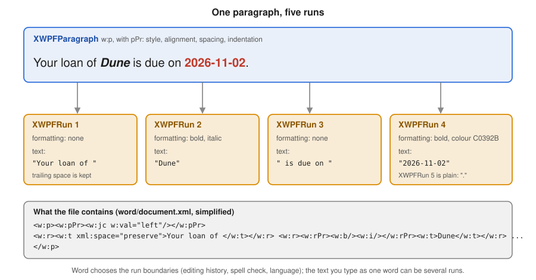

Word Documents with XWPF
|
This content was generated with the assistance of AI and should be verified against the official documentation before being relied on in production. |
Baseline date: 2026-10-09. This page was written against Apache POI 5.5.1 (the latest release on that date; the 6.0 line
is in development and has not been released), Java 21 and later, Spring Boot 4.x on Spring Framework 7 and Jakarta EE 11.
It is the first hands-on page about Word. It explains the object model that every other Word page builds on, how a
.docx file is turned into XWPFDocument, XWPFParagraph and XWPFRun objects, how to create paragraphs and runs, how
to format them (fonts, colours, alignment, spacing, styles, breaks, hyperlinks), how to read a document back in order,
and where the high-level API ends and the raw XML beans begin. The examples use the Bookshelf scenario described in the
section landing page: a loan-letter.docx written to a reader and a
monthly-report.docx for the library staff.
The big picture (components, jars, API levels) is in
Introduction & Architecture, the Maven and Gradle
coordinates in Setup & Dependencies, and the physical structure of
a .docx (the zip package, the main document part, the relationships) in
File Formats: OOXML & OLE2. The following Word pages continue
from here: Word Tables, Lists & Images,
Word Headers, Footers, Sections & Fields,
Word Templates & Placeholder Replacement,
Word Charts & Embedded Objects and, for the old binary
format, Legacy .doc with HWPF.
What XWPF is
XWPF ("XML Word Processor Format") is the Apache POI component that reads and writes Word 2007 and later documents
(.docx, and the macro-enabled .docm). It lives in the poi-ooxml jar, in the package
org.apache.poi.xwpf.usermodel. A .docx file is a zip package (OOXML, ECMA-376) whose main content is the part
/word/document.xml, written in the WordprocessingML vocabulary. XWPF wraps that XML in a Java object model.
Two facts shape everything on this page:
-
XWPF is a thin layer over XML beans. Each high-level class (
XWPFParagraph,XWPFRun,XWPFTable…) holds an Apache XMLBeans object (CTP,CTR,CTTbl…) generated from the OOXML schema and exposes the common properties as Java methods. Anything XWPF does not wrap is still reachable through the bean, at the price of working with the raw schema. The POI project describes XWPF as fairly stable but incomplete. -
There is no layout engine. Word decides where lines and pages break when it opens the file. XWPF stores instructions ("this text is bold, this paragraph is centred") and never measures anything. It cannot tell you how many pages the document has, and it cannot render or convert the document to PDF.
XWPF and HWPF (the .doc binary format) are separate APIs with no common interface. A program that must handle both
needs two code paths, or the text-extraction classes that hide the difference when only the text matters.
The model: document, body elements and runs
A Word document is an ordered list of body elements (paragraphs, tables, and content controls) inside a body. A paragraph contains runs, and a run contains the text and the character formatting that applies to it. A run is the smallest unit that carries formatting: the paragraph holds block properties (alignment, spacing, indentation, style), the run holds character properties (bold, italic, font, size, colour).

| Class | Represents | Main operations |
|---|---|---|
|
The whole file: the body, the styles, numbering, headers, footers, footnotes, the core properties and the package. |
|
|
Common interface of everything that can sit in the body or in a table cell. Reports its |
|
|
A block of text that Word wraps and breaks as a unit ( |
|
|
A stretch of text with uniform character formatting ( |
|
|
A run inside a hyperlink ( |
|
|
A table: rows, cells, and in each cell again paragraphs and tables. Detailed in Word Tables, Lists & Images. |
|
|
A block-level content control (structured document tag), often used for form fields. |
|
|
The style definitions of the document ( |
|
|
Header and footer parts. Covered in Word Headers, Footers, Sections & Fields. |
|
The diagram shows how the main classes relate. Note that a table cell is itself a body (IBody): it contains
paragraphs and nested tables, which is why the same XWPFParagraph class appears at the document level and inside a cell.
How the classes map to the package:
| XWPF object | OOXML part and element |
|---|---|
|
The package, with |
|
|
|
|
|
|
|
|
|
|
Choosing how to open and write documents
Creating an empty document is one constructor call. Opening an existing file has three forms:
| Form | Behaviour |
|---|---|
|
An empty document with one empty body and no styles part. Add content and call |
|
Reads the whole package from a stream. Closing the document does not write anything back. Use it for uploads. |
|
Uses a package you opened yourself. With |
Opening a File through OPCPackage.open(File) uses read-write access by default, and closing that package writes the
changes back into the same file. For code that only reads a document, always pass PackageAccess.READ. Closing the
XWPFDocument closes the underlying package, so a single try-with-resources on the document is enough.
Writing is document.write(OutputStream). It serialises the whole in-memory model into a new zip stream, so it can be
called several times and the document stays usable afterwards.
Creating loan-letter.docx
The first example writes the letter that the Bookshelf library sends when a loan is about to expire. It uses plain paragraphs and runs with direct formatting; everything is explained in the following sections.
import java.io.IOException;
import java.io.OutputStream;
import java.nio.file.Files;
import java.nio.file.Path;
import org.apache.poi.xwpf.usermodel.ParagraphAlignment;
import org.apache.poi.xwpf.usermodel.XWPFDocument;
import org.apache.poi.xwpf.usermodel.XWPFParagraph;
import org.apache.poi.xwpf.usermodel.XWPFRun;
public final class LoanLetterWriter {
private LoanLetterWriter() {
}
public static void write(Path target, String reader, String title, String dueDate)
throws IOException {
try (XWPFDocument document = new XWPFDocument();
OutputStream out = Files.newOutputStream(target)) {
XWPFParagraph header = document.createParagraph();
header.setAlignment(ParagraphAlignment.RIGHT);
XWPFRun library = header.createRun();
library.setText("Bookshelf Public Library");
library.setBold(true);
library.setFontFamily("Calibri");
library.setFontSize(14);
library.addBreak();
XWPFRun address = header.createRun();
address.setText("12 Reading Lane, 28001 Madrid");
address.setFontSize(10);
address.setColor("555555");
XWPFParagraph greeting = document.createParagraph();
greeting.setSpacingBefore(600); // twips: 30 pt
greeting.setSpacingAfter(200); // twips: 10 pt
greeting.createRun().setText("Dear " + reader + ",");
XWPFParagraph body = document.createParagraph();
body.setAlignment(ParagraphAlignment.BOTH);
body.setSpacingAfter(200);
body.createRun().setText("Your loan of ");
XWPFRun book = body.createRun();
book.setText(title);
book.setBold(true);
book.setItalic(true);
body.createRun().setText(" is due on ");
XWPFRun due = body.createRun();
due.setText(dueDate);
due.setBold(true);
due.setColor("C0392B");
body.createRun().setText(". You can renew it once at the desk or online.");
XWPFParagraph closing = document.createParagraph();
closing.createRun().setText("Kind regards,");
closing.createRun().addBreak();
closing.createRun().setText("The Bookshelf team");
document.write(out);
}
}
}Source: POI XWPF Quick Guide and the official SimpleDocument example.
Two behaviours of this example deserve attention. closing.createRun().setText(...) followed by
closing.createRun().addBreak() produces three runs in one paragraph; the break is a run that contains a <w:br/>
element and no text. And the resulting file contains exactly the formatting that was asked for, no more: there is no
"Normal" style definition, so Word falls back to its own defaults (typically Calibri 11 pt, or whatever the reader’s
Word installation uses for documents without a styles part).
Paragraphs
document.createParagraph() appends a new empty paragraph at the end of the body and returns it. A paragraph with no
run is still valid and shows as an empty line. The paragraph owns the block-level formatting:
| Method | Unit or type | Effect |
|---|---|---|
|
|
Horizontal alignment. |
|
Twips (one twentieth of a point) |
Space above and below the paragraph. Both are ignored between two paragraphs of the same style when the style says "do not add space between paragraphs of the same style". |
|
Multiple of the line, or points, depending on the rule |
Line spacing. |
|
Twips |
Left and right indent of the whole paragraph. |
|
Twips |
First-line indent. A negative first line with a positive left indent produces a hanging indent. |
|
boolean |
Starts the paragraph on a new page (the "page break before" property). Not the same as a break run; see below. |
|
boolean |
Keep with the next paragraph or keep all lines on one page. |
|
Style ID |
Applies a paragraph style. See the styles section. |
|
|
Paragraph borders. |
|
boolean |
Allow wrapping of Latin text in the middle of a word. |
Because Word measures lengths in twips in the file, so does XWPF: 20 twips are one point and 1,440 twips are one inch. There is no unit conversion in the paragraph methods, so a small helper makes code readable:
final class Twips {
private Twips() {
}
static int fromPoints(double points) {
return (int) Math.round(points * 20);
}
static int fromCentimetres(double cm) {
return (int) Math.round(cm / 2.54 * 1440);
}
}A paragraph also reports what it contains. paragraph.getText() concatenates the text of its runs (including hyperlink
runs and content controls), paragraph.getRuns() returns the runs as a List<XWPFRun>, and paragraph.getIRuns()
returns every run-level object as IRunElement, including some that getRuns does not model as XWPFRun. To insert
a run at a position use insertNewRun(int); to delete one use removeRun(int). Both take the position in the list
returned by getRuns(), not in the getIRuns() list; POI updates the getIRuns() list as a side effect.
Runs and text
A run is created with paragraph.createRun(). It starts empty and unformatted. The most important method is also the
easiest to misuse:
| Call | Behaviour |
|---|---|
|
Appends a new text element to the run. Calling it twice leaves both strings in the run. |
|
Replaces the text element at index |
|
The text element at |
|
All the text of the run joined, including the characters produced by tabs and breaks. |
|
The same joined text; handy for debugging. |
|
A line break ( |
|
A tab character ( |
|
A carriage return element ( |
The consequence: to replace the text of a run, call run.setText(newValue, 0). Calling run.setText(newValue) on a
run that already has text produces a run holding the old and the new text one after the other. This is the most common
mistake in code that edits existing documents, and it is why the template page spends so long on replacing text.
Control characters inside the string are not instructions. A "\n" inside setText does not start a new line in
Word, and a "\t" is not a reliable tab. Use addBreak() and addTab() to insert real break and tab elements, one
run per line when the text comes from a multi-line string:
static void addMultilineText(XWPFParagraph paragraph, String text) {
XWPFRun run = paragraph.createRun();
String[] lines = text.split("\\R", -1);
for (int i = 0; i < lines.length; i++) {
if (i > 0) {
run.addBreak();
}
run.setText(lines[i], run.getCTR().sizeOfTArray());
}
}Leading and trailing spaces are preserved: POI adds xml:space="preserve" to the text element when the string starts or
ends with white space (see the first run in the figure). Characters that are not valid in XML 1.0 (most control
characters below U+0020) cannot be stored; strip them from user-provided text before writing, otherwise the document is
rejected by Word as corrupt or the write fails.
Source: XWPFRun Javadoc and POI XWPF Quick Guide.
Character formatting
All character formatting lives on the run. The setters create the property element in the run’s <w:rPr> as needed:
| Method | Argument | Effect |
|---|---|---|
|
boolean |
Bold and italic. |
|
|
Underline style. |
|
boolean |
Strike-through. |
|
Font name, for example |
Sets the Latin font. |
|
Points |
Size in points. XWPF converts to the half-points that the file stores. |
|
Hexadecimal |
Text colour. |
|
A Word highlight name such as |
Marker-style highlight (a fixed palette, unlike shading). |
|
|
Raised or lowered text. |
|
boolean |
All capitals and small capitals. |
|
Twips |
Expanded or condensed spacing. |
|
Character style ID |
Applies a character style defined in the styles part. |
Getters mirror the setters but behave differently from what one expects. run.isBold() returns true only when the
run itself says so. A run that is bold because its paragraph style or character style makes it bold reports false, and
getFontFamily() returns null unless the run sets a font. XWPF does not resolve style inheritance for you; a program
that wants the effective formatting has to walk run, character style, paragraph style and document defaults itself.
The following helper creates runs for the monthly report. It shows the habit that keeps formatting code readable: a small, named method per kind of text rather than repeated setters.
import org.apache.poi.xwpf.usermodel.UnderlinePatterns;
import org.apache.poi.xwpf.usermodel.XWPFParagraph;
import org.apache.poi.xwpf.usermodel.XWPFRun;
final class Runs {
private Runs() {
}
static XWPFRun plain(XWPFParagraph paragraph, String text) {
XWPFRun run = paragraph.createRun();
run.setText(text);
return run;
}
static XWPFRun bold(XWPFParagraph paragraph, String text) {
XWPFRun run = plain(paragraph, text);
run.setBold(true);
return run;
}
static XWPFRun emphasis(XWPFParagraph paragraph, String text) {
XWPFRun run = plain(paragraph, text);
run.setItalic(true);
run.setUnderline(UnderlinePatterns.SINGLE);
return run;
}
static XWPFRun status(XWPFParagraph paragraph, String text, boolean overdue) {
XWPFRun run = plain(paragraph, text);
run.setBold(true);
run.setColor(overdue ? "C0392B" : "1E8449");
return run;
}
}Source: XWPFRun Javadoc.
Styles
Direct formatting (setting bold and size on every run) is easy but does not scale: changing the look of all headings
means editing all headings. Word’s answer is styles: named bundles of paragraph and character properties defined once
in /word/styles.xml and applied by name. XWPF models them with XWPFStyles (the collection) and XWPFStyle (one
definition).
The central rule: setStyle takes the style ID, not the name shown in Word. The ID is the w:styleId attribute and
is usually the display name without spaces: the style shown as "Heading 1" has the ID Heading1, "List Paragraph" has
ListParagraph. Styles can also have a different, user-defined ID entirely. XWPFStyles can look up both:
XWPFStyles styles = document.getStyles(); // null when the document has no styles part
XWPFStyle byId = styles.getStyle("Heading1"); // by ID
XWPFStyle byName = styles.getStyleWithName("heading 1"); // by name; Word stores built-in names in lower case
boolean defined = styles.styleExist("Heading1");The second rule is the surprise for newcomers: a new XWPFDocument() has no style definitions at all. Calling
paragraph.setStyle("Heading1") on such a document writes the reference but there is nothing for it to refer to, so
Word shows the paragraph in its normal formatting. There are three ways to get real styles:
| Approach | How | Trade-off |
|---|---|---|
Start from a template |
Open a |
The best option for corporate documents: designers own the look and code only picks style IDs. |
Add style definitions in code |
Build a |
Self-contained, but you write schema-level code and have to define each style fully. |
Direct formatting |
Set properties on every run and paragraph. |
Fine for a few elements; nothing to maintain, but nothing for the user to restyle either. The loan letter above does this. |
The example defines a heading style programmatically and uses it for the monthly report. The outline level makes the paragraphs appear in Word’s navigation pane and lets a table of contents (covered on the headers, footers and fields page) pick them up.
import java.io.IOException;
import java.io.OutputStream;
import java.math.BigInteger;
import java.nio.file.Files;
import java.nio.file.Path;
import java.time.YearMonth;
import org.apache.poi.xwpf.usermodel.ParagraphAlignment;
import org.apache.poi.xwpf.usermodel.XWPFDocument;
import org.apache.poi.xwpf.usermodel.XWPFParagraph;
import org.apache.poi.xwpf.usermodel.XWPFStyle;
import org.apache.poi.xwpf.usermodel.XWPFStyles;
import org.openxmlformats.schemas.wordprocessingml.x2006.main.CTPPrGeneral;
import org.openxmlformats.schemas.wordprocessingml.x2006.main.CTRPr;
import org.openxmlformats.schemas.wordprocessingml.x2006.main.CTStyle;
import org.openxmlformats.schemas.wordprocessingml.x2006.main.STStyleType;
public final class MonthlyReportWriter {
private static final String HEADING_1 = "BookshelfHeading1";
private static final String HEADING_2 = "BookshelfHeading2";
private MonthlyReportWriter() {
}
public static void write(Path target, YearMonth month, int loans, int returns, int overdue)
throws IOException {
try (XWPFDocument document = new XWPFDocument();
OutputStream out = Files.newOutputStream(target)) {
XWPFStyles styles = document.createStyles();
addHeadingStyle(styles, HEADING_1, "Bookshelf Heading 1", 36, 0);
addHeadingStyle(styles, HEADING_2, "Bookshelf Heading 2", 28, 1);
XWPFParagraph title = document.createParagraph();
title.setStyle(HEADING_1);
title.createRun().setText("Monthly report " + month);
XWPFParagraph intro = document.createParagraph();
intro.setAlignment(ParagraphAlignment.BOTH);
intro.createRun().setText("This report summarises the activity of the Bookshelf library "
+ "during the month. Figures come from the loan register.");
XWPFParagraph section = document.createParagraph();
section.setStyle(HEADING_2);
section.createRun().setText("Loans");
XWPFParagraph figures = document.createParagraph();
figures.createRun().setText("Loans started: " + loans + ". Returns: " + returns + ". ");
var warning = figures.createRun();
warning.setText("Overdue: " + overdue);
warning.setBold(true);
warning.setColor(overdue > 0 ? "C0392B" : "1E8449");
document.write(out);
}
}
private static void addHeadingStyle(XWPFStyles styles, String id, String name, int halfPoints,
int outlineLevel) {
CTStyle ctStyle = CTStyle.Factory.newInstance();
ctStyle.setStyleId(id);
ctStyle.setType(STStyleType.PARAGRAPH);
ctStyle.addNewName().setVal(name);
CTPPrGeneral paragraphProperties = ctStyle.addNewPPr();
paragraphProperties.addNewKeepNext();
paragraphProperties.addNewOutlineLvl().setVal(BigInteger.valueOf(outlineLevel));
paragraphProperties.addNewSpacing().setBefore(BigInteger.valueOf(240));
paragraphProperties.getSpacing().setAfter(BigInteger.valueOf(120));
CTRPr runProperties = ctStyle.addNewRPr();
runProperties.addNewB();
runProperties.addNewColor().setVal("1F3864");
runProperties.addNewSz().setVal(BigInteger.valueOf(halfPoints));
styles.addStyle(new XWPFStyle(ctStyle, styles));
}
}Source: XWPFStyles Javadoc, XWPFStyle Javadoc and the official SimpleDocument example, which adds a style the same way.
In addHeadingStyle the size is in half-points (36 is an 18 pt heading), because the CTStyle bean is the raw
schema and the unit conversion that XWPFRun.setFontSize does for you is not available. This is the first appearance of
the low-level layer; the section "Dropping down to the CT beans" below explains when it is worth it.
A few more points on styles:
-
A run can also have a style:
run.setStyle("Strong")applies a character style. Paragraph styles and character styles are different kinds (STStyleType.PARAGRAPHandSTStyleType.CHARACTER) and are not interchangeable. -
Styles can inherit from another one through
basedOn. Word’s built-in styles are all based on "Normal", which a document without a styles part does not define. The example above leaves outbasedOnfor this reason. -
A template can define a style that has the same name but another ID than you expect, because the ID is derived when the style is first created. Look up by name with
getStyleWithNameand readgetStyleId()from the result instead of hard-coding IDs whenever the template is not under your control. -
XWPFStyles.getDefaultRunStyle()andgetDefaultParagraphStyle()expose the document defaults for diagnostics.
Breaks, tabs and page breaks
Line breaks, page breaks and column breaks are all <w:br> elements inside a run, selected by BreakType:
BreakType |
Effect |
|---|---|
|
A line break inside the paragraph (the default of |
|
The following content starts on a new page. The break is inside the current paragraph; Word starts the next line on a new page, which leaves the remainder of the paragraph on the new page. |
|
The following content starts in the next column in a multi-column section. |
There are two ways to start a page, and the difference matters for the report. run.addBreak(BreakType.PAGE) puts the
break in the middle of a paragraph, so an empty paragraph that only holds the break leaves a trailing empty line at the top
of the next page in some Word versions. paragraph.setPageBreak(true) sets the "page break before" property on the
paragraph itself, which starts that paragraph on a fresh page without an extra empty line. For a chapter title prefer
setPageBreak(true) on the title paragraph; reserve the break run for a break inside running text.
XWPFParagraph chapter = document.createParagraph();
chapter.setPageBreak(true); // "page break before"
chapter.setStyle(HEADING_1);
chapter.createRun().setText("Overdue loans");
XWPFParagraph tabs = document.createParagraph();
XWPFRun cell = tabs.createRun();
cell.setText("Title");
cell.addTab();
cell.setText("Author", cell.getCTR().sizeOfTArray());
cell.addTab();
cell.setText("Due", cell.getCTR().sizeOfTArray());Source: BreakType Javadoc and XWPFParagraph Javadoc.
Page layout, section breaks, orientation and margins are not paragraph properties; they belong to the section and are covered in Word Headers, Footers, Sections & Fields.
Hyperlinks
XWPFParagraph.createHyperlinkRun(String uri) creates a hyperlink to an external address. POI registers the target as
an external relationship of the main document part and returns an XWPFHyperlinkRun, which is a normal run for
formatting purposes. Word does not style the link by itself: a link without formatting looks like plain text, so apply
the usual blue and underline explicitly or through a character style such as "Hyperlink".
XWPFParagraph catalogue = document.createParagraph();
catalogue.createRun().setText("Browse the catalogue at ");
XWPFHyperlinkRun link = catalogue.createHyperlinkRun("https://library.example.org/catalogue");
link.setText("library.example.org");
link.setColor("0563C1");
link.setUnderline(UnderlinePatterns.SINGLE);
catalogue.createRun().setText(".");Reading the target goes through the document, because the URI is stored in the relationships:
for (XWPFRun run : paragraph.getRuns()) {
if (run instanceof XWPFHyperlinkRun linkRun) {
XWPFHyperlink hyperlink = linkRun.getHyperlink(document);
String target = hyperlink != null ? hyperlink.getURL() : linkRun.getAnchor();
System.out.println(linkRun.text() + " -> " + target);
}
}An internal link to a bookmark has no relationship: it carries an anchor name, returned by getAnchor(). Creating
bookmarks and internal links needs the CT beans (CTBookmark, CTHyperlink); XWPF has no higher-level API for them.
Never build hyperlink targets from unvalidated input that may contain a javascript: or a file: scheme; allow
https (and mailto) explicitly.
Source: XWPFHyperlinkRun Javadoc and XWPFParagraph Javadoc.
Reading a document in order
A document can interleave paragraphs and tables, and any program that processes a form (the Bookshelf
book-request-form.docx) needs the original order. document.getParagraphs() and document.getTables() return two
separate lists and lose the relative position. The ordered list is getBodyElements():
| Method | Returns |
|---|---|
|
Every top-level element in document order: |
|
Only the top-level paragraphs. Paragraphs inside tables or content controls are not included. |
|
Only the top-level tables. |
|
Iterators over the same data. |
|
Conversions between positions in the lists. They are different index spaces. |
The next example reads book-request-form.docx and prints an outline of its structure. It opens the file read-only
(PackageAccess.READ) so that closing it cannot modify the file, and it uses a switch on the
BodyElementType enum.
import java.io.IOException;
import java.nio.file.Path;
import org.apache.poi.openxml4j.exceptions.InvalidFormatException;
import org.apache.poi.openxml4j.opc.OPCPackage;
import org.apache.poi.openxml4j.opc.PackageAccess;
import org.apache.poi.xwpf.usermodel.IBodyElement;
import org.apache.poi.xwpf.usermodel.XWPFDocument;
import org.apache.poi.xwpf.usermodel.XWPFParagraph;
import org.apache.poi.xwpf.usermodel.XWPFSDT;
import org.apache.poi.xwpf.usermodel.XWPFTable;
public final class DocumentOutline {
private DocumentOutline() {
}
public static void print(Path file) throws IOException, InvalidFormatException {
try (OPCPackage pkg = OPCPackage.open(file.toFile(), PackageAccess.READ);
XWPFDocument document = new XWPFDocument(pkg)) {
int index = 0;
for (IBodyElement element : document.getBodyElements()) {
switch (element.getElementType()) {
case PARAGRAPH -> {
XWPFParagraph paragraph = (XWPFParagraph) element;
System.out.printf("%2d paragraph style=%s runs=%d text=%s%n", index,
paragraph.getStyleID(), paragraph.getRuns().size(), paragraph.getText());
}
case TABLE -> {
XWPFTable table = (XWPFTable) element;
System.out.printf("%2d table rows=%d%n", index, table.getNumberOfRows());
}
case CONTENTCONTROL -> {
XWPFSDT control = (XWPFSDT) element;
System.out.printf("%2d content control tag=%s title=%s value=%s%n", index,
control.getTag(), control.getTitle(), control.getContent().getText());
}
default -> System.out.printf("%2d other %s%n", index, element.getElementType());
}
index++;
}
}
}
}Source: XWPFDocument Javadoc, IBodyElement Javadoc and OPCPackage Javadoc.
For a document such as the request form the output looks like this (the style ID is null for a paragraph without an
explicit style, which Word treats as "Normal"):
0 paragraph style=Title runs=1 text=Book request form
1 paragraph style=null runs=3 text=Requested by: Ana García
2 content control tag=isbn title=ISBN value=978-84-376-0494-7
3 table rows=4
4 paragraph style=null runs=1 text=Please return the form to the desk.Notice runs=3 for "Requested by: Ana García": a text that reads as one line was stored as three runs. That is normal,
and it is why searching or replacing text in a paragraph run by run fails for anything that spans a boundary. The reading
code here only prints, so it is unaffected, but the placeholder replacement on the
templates page is built around this fact, and
the import of structured data from Word forms builds on the same loop.
Several details about reading:
-
A paragraph inside a table cell is reached through
table.getRows(),row.getTableCells()andcell.getParagraphs()(orcell.getBodyElements()for nested tables). The loop above reports only the table, not its content. -
paragraph.getText()includes the text of hyperlink runs and simple fields, but a complex field (a PAGE number, a table of contents) contributes its stored result text or nothing, depending on how Word saved it. Treat extracted text as a best effort, not as a faithful rendering. -
Revision marks (tracked changes) are in the XML as insertions and deletions.
getText()returns the inserted text and, depending on the construct, may omit text insidew:inswrappers that XWPF does not model. Documents with tracked changes should have their revisions accepted before processing, or be read through the XML beans. -
Floating text boxes and shapes hold their paragraphs in drawing markup (
w:txbxContent) that is not part of the body element list. Their text can be reached throughXWPFRun.getCTR()and an XPath over the run’s XML, or with the text extractors described on the text-extraction page of this section.
Document properties
The core, extended and custom properties are available through document.getProperties(), which returns a
POIXMLProperties. They are the data Word shows under File > Info and that the operating system uses for search.
import org.apache.poi.ooxml.POIXMLProperties;
POIXMLProperties.CoreProperties core = document.getProperties().getCoreProperties();
core.setTitle("Monthly report 2026-09");
core.setCreator("Bookshelf reporting service");
core.setSubjectProperty("Library activity");
core.setKeywords("loans, returns, overdue");
core.setCreated(java.util.Optional.of(java.util.Date.from(java.time.Instant.now())));
document.getProperties().getCustomProperties().addProperty("report-month", "2026-09");Do not put personal data or internal paths into these properties unless that is intended: the creator field is the first thing that leaks when documents are published. Documents created from a template inherit the template’s properties, including its author and company, so overwrite them explicitly.
Source: POIXMLProperties Javadoc.
Modifying an existing document
Opening an existing .docx, changing it, and writing the result under another name is the same model:
import java.io.IOException;
import java.io.InputStream;
import java.io.OutputStream;
import java.nio.file.Files;
import java.nio.file.Path;
import org.apache.poi.xwpf.usermodel.XWPFDocument;
import org.apache.poi.xwpf.usermodel.XWPFParagraph;
import org.apache.poi.xwpf.usermodel.XWPFRun;
public final class LoanLetterEditor {
private LoanLetterEditor() {
}
/** Appends a reminder paragraph and writes the result to a different file. */
public static void addReminder(Path source, Path target, String reminder) throws IOException {
try (InputStream in = Files.newInputStream(source);
XWPFDocument document = new XWPFDocument(in);
OutputStream out = Files.newOutputStream(target)) {
XWPFParagraph paragraph = document.createParagraph();
XWPFRun run = paragraph.createRun();
run.setText(reminder);
run.setItalic(true);
// Remove a trailing empty paragraph left behind by an earlier edit.
int last = document.getBodyElements().size() - 1;
if (last > 0 && document.getBodyElements().get(last - 1) instanceof XWPFParagraph previous
&& previous.getText().isBlank() && previous.getRuns().isEmpty()) {
document.removeBodyElement(last - 1);
}
document.write(out);
}
}
}Source: XWPFDocument Javadoc.
Removing and reordering elements has two traps. document.removeBodyElement(int) takes an index in the body element
list (the combined list), not in the paragraph list, so mixing the two index spaces removes the wrong thing. And
document.setParagraph(XWPFParagraph, int) replaces the XML of a paragraph at an index of the paragraph list. Since a
paragraph object keeps a reference to its XML node, a removed paragraph must not be used afterwards.
Inserting in the middle of a document uses a cursor: document.insertNewParagraph(XmlCursor) and
insertNewTbl(XmlCursor) create an element at the cursor position of a paragraph’s XML (paragraph.getCTP().newCursor()).
This is the pattern for "insert a paragraph at the marker paragraph" shown in
Word Templates & Placeholder Replacement,
and the XmlCursor should be released (close() or dispose(), depending on the XMLBeans version) after use.
Dropping down to the CT beans
Every XWPF object exposes its XML bean: paragraph.getCTP() returns a CTP, run.getCTR() returns a CTR,
table.getCTTbl() a CTTbl, document.getDocument() a CTDocument1. These classes live in the package
org.openxmlformats.schemas.wordprocessingml.x2006.main, are generated by XMLBeans from the ECMA-376 schema, and expose
the complete file format. Use them when XWPF has no method for what you need:
| Need | Typical beans |
|---|---|
Style definitions (the example above) |
|
Bookmarks and internal links |
|
Section properties (page size, margins, orientation) |
|
Table cell merges, borders, widths |
|
Fields and content controls |
|
Text direction, language, text effects |
|
Working at this level has three costs you should plan for.
-
The right jar. The beans for the whole schema exist in two forms.
poi-ooxml-lite(about 6 MB) contains only the schema classes that the POI code itself uses;poi-ooxml-full(about 16 MB) contains all of them. A call to a bean class or method that the lite jar left out fails at run time with aNoClassDefFoundError, not at compile time. If your code usesCT*classes beyond what XWPF touches, depend onpoi-ooxml-fullinstead of the lite artifact. See Setup & Dependencies for the coordinates. -
Units and conventions of the raw schema. Sizes are in half-points or twips as integers (often
BigIntegerin the generated setters), booleans are smallCTOnOffelements (their absence isfalse,addNewB()alone istrue), colours are hexadecimal strings, and enumerations come fromST*types. Setters on the beans do not validate that the combination makes sense to Word. -
Order matters. The schema defines a sequence for the children of
w:pPr,w:rPrandw:sectPr. The XMLBeansaddNew...methods insert in the schema order, so beans created through them are fine, but hand-written XML strings inserted through a cursor must keep the order, or Word reports the file as corrupt even though POI reads it.
The generated beans are tied to the POI and XMLBeans versions in use, so code that relies on CT* details should be covered by a test that
opens the produced file again (see the testing section) whenever POI is upgraded.
What XWPF does not provide
-
No layout and no pagination. XWPF cannot compute page numbers, text widths, table row heights, or the number of pages, and it does not render anything. The same applies to the question of whether text fits in a table cell.
-
No conversion to PDF. Neither
.docxnor.doccan be converted to PDF by POI. Thepoi-scratchpadHWPF converter package only produces HTML and XSL-FO for old.docfiles. Converting a Word document to PDF needs another tool (LibreOffice in headless mode, a commercial library, or a different generation approach, see the PDF Generation section of this site). -
No template or mail-merge API. There is no
replace("${name}", value)method. Placeholder replacement is code you write, and Word’s habit of splitting text across runs is what makes it non-trivial. -
No style-resolution API. XWPF does not compute the effective formatting of a run from the inheritance chain of styles.
-
No guaranteed round-trip of unknown content. XWPF keeps the parts it does not understand, but features that it does not model (some drawings, WordArt, advanced fields, comments threads in new Word versions) can be altered or dropped in unusual combinations. Test on real templates.
-
Not a validator. POI writes what you ask for. A document that Word rejects can be produced by invalid combinations of bean values; open the result in Word (or LibreOffice) as part of the test of any generator.
-
Thread safety. An
XWPFDocumentis not thread safe. Use one instance per request and never share it.
Memory and performance
XWPF builds the complete document in memory as XML beans, with no streaming writer comparable to SXSSF for spreadsheets.
As a rough rule the memory used is a multiple of the file size (typically several times for text, much more with large
embedded images, which stay in memory as byte arrays until write). Practical consequences:
-
Generate reports with hundreds of pages, not millions of rows. A table of 100,000 rows in Word is a bad idea for other reasons as well (Word itself becomes slow); export such data to a spreadsheet instead.
-
An uploaded
.docxis a zip: apply the size limits and zip-bomb protections described on the security page of this section before opening it. Use a bounded input stream for uploads. -
Create one
XWPFDocumentper request, write it to the response (or a temp file) and close it in the same try-with-resources block. A document kept in a field of a Spring singleton is a memory leak and a thread-safety bug. -
writeserialises the full model; calling it repeatedly for progress reports is wasteful.
Pitfalls
| Pitfall | Remedy |
|---|---|
|
Use |
|
Use |
|
Use the style ID ( |
A new document has no headings |
The default |
|
The boldness comes from a style. XWPF does not resolve inheritance. |
Closing a package opened for read-write rewrites the file |
Open read-only: |
A text split in several runs |
Do not search run by run; use the techniques of the templates page. |
|
Depend on |
Empty paragraph at the top of a page |
Use |
Document rejected by Word |
Invalid XML characters in text, or children added to a |
Metadata leaks |
Overwrite creator and company, which are inherited from templates. |
Changes across POI versions
| Version | What matters for XWPF |
|---|---|
3.x |
Public integer constants for some enumerations, and the first XWPF classes. Many of today’s convenience methods did not
exist, so old tutorials use the |
4.0 and 4.1 |
Java 8 as the minimum. More run and paragraph convenience methods were added over the 4.1 releases, among them hyperlink runs. |
5.0 |
The OOXML dependency was reorganised: the XML schema classes are split into |
5.1 to 5.5 |
Logging through |
6.0 (in development, not released) |
The POI site announces JDK 17 as the minimum, the removal of APIs deprecated in 5.x and further hardening. Code that compiles without deprecation warnings on 5.5.1 is the best preparation. Check the change log when 6.0 ships. |
Testing a generator
A generator is correct when the result opens in Word, not when write returned. Two cheap tests catch most
regressions: write the file to a temporary location and read it back with XWPF, asserting the text and the style IDs of
the paragraphs, and open it with another independent reader (LibreOffice in headless mode, or a different library) in
an integration test. AssertJ and JUnit are enough:
import static org.assertj.core.api.Assertions.assertThat;
import java.io.IOException;
import java.nio.file.Path;
import java.time.YearMonth;
import org.apache.poi.openxml4j.opc.OPCPackage;
import org.apache.poi.openxml4j.opc.PackageAccess;
import org.apache.poi.xwpf.usermodel.XWPFDocument;
import org.junit.jupiter.api.Test;
import org.junit.jupiter.api.io.TempDir;
class MonthlyReportWriterTest {
@TempDir
Path directory;
@Test
void writesTitleWithHeadingStyle() throws Exception {
Path file = directory.resolve("monthly-report.docx");
MonthlyReportWriter.write(file, YearMonth.of(2026, 9), 120, 98, 4);
try (OPCPackage pkg = OPCPackage.open(file.toFile(), PackageAccess.READ);
XWPFDocument document = new XWPFDocument(pkg)) {
var title = document.getParagraphs().get(0);
assertThat(title.getStyleID()).isEqualTo("BookshelfHeading1");
assertThat(title.getText()).isEqualTo("Monthly report 2026-09");
assertThat(document.getStyles().styleExist("BookshelfHeading2")).isTrue();
}
}
}Source: JUnit User Guide and AssertJ documentation.
Summary
-
A
.docxis anXWPFDocumentholding body elements; a paragraph holds runs; a run holds text and character formatting. Block formatting is on the paragraph, character formatting on the run. -
createParagraphandcreateRunappend;setText(value)appends too,setText(value, 0)replaces. -
Lengths are twips (20 per point); font sizes in the high-level API are points, in the beans half-points.
-
Styles are applied by ID and must exist in the document: a new
XWPFDocumenthas none. -
getBodyElements()is the only way to read paragraphs and tables in order; open files read-only withPackageAccess.READ. -
Drop to the
CT*beans for what XWPF lacks, withpoi-ooxml-fullwhen the lite jar is missing a class. -
POI does not lay out, paginate, convert to PDF or merge templates.
References
-
Word components: https://poi.apache.org/components/document/
-
XWPF Quick Guide: https://poi.apache.org/components/document/quick-guide-xwpf.html
-
Document overview: https://poi.apache.org/components/document/docoverview.html
-
Javadoc,
org.apache.poi.xwpf.usermodel: https://poi.apache.org/apidocs/dev/org/apache/poi/xwpf/usermodel/package-summary.html -
Javadoc,
XWPFDocument: https://poi.apache.org/apidocs/dev/org/apache/poi/xwpf/usermodel/XWPFDocument.html -
Javadoc,
XWPFParagraph: https://poi.apache.org/apidocs/dev/org/apache/poi/xwpf/usermodel/XWPFParagraph.html -
Javadoc,
XWPFRun: https://poi.apache.org/apidocs/dev/org/apache/poi/xwpf/usermodel/XWPFRun.html -
Javadoc,
XWPFStyles: https://poi.apache.org/apidocs/dev/org/apache/poi/xwpf/usermodel/XWPFStyles.html -
Javadoc,
OPCPackage: https://poi.apache.org/apidocs/dev/org/apache/poi/openxml4j/opc/OPCPackage.html -
OpenXML4J: https://poi.apache.org/components/oxml4j/
-
Official examples (
xwpf/usermodel): https://github.com/apache/poi/tree/trunk/poi-examples/src/main/java/org/apache/poi/examples/xwpf/usermodel -
Apache XMLBeans: https://xmlbeans.apache.org/
-
ECMA-376: https://ecma-international.org/publications-and-standards/standards/ecma-376/
-
Release changes: https://poi.apache.org/changes.html
-
AssertJ: https://assertj.github.io/doc/